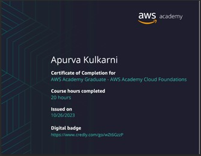
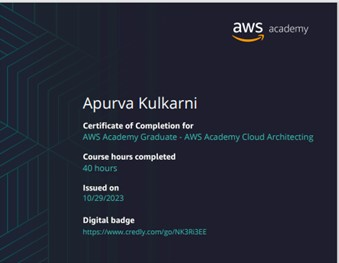
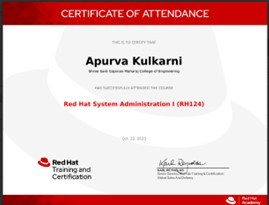
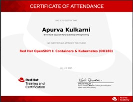
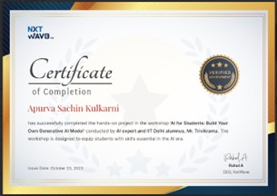

1. AWS Academy Cloud Foundations [56805]

This comprehensive program was designed for individuals like me who aspire to gain a holistic understanding of cloud computing concepts, irrespective of specific technical roles. Throughout the course, I delved deep into various fundamental aspects of cloud computing, including a detailed overview of cloud concepts, AWS core services, security protocols, architectural principles, pricing models, and customer support frameworks.
The course equipped me with invaluable insights and practical knowledge, allowing me to grasp the intricacies of cloud technologies and their applications across diverse industries. With a solid foundation in cloud computing principles, I am confident in my ability to leverage AWS services effectively to address real-world challenges and drive innovation.
Completing the AWS Academy Cloud Foundations course has been an enriching experience, and I look forward to applying my newfound expertise in future endeavors within the dynamic field of cloud computing.
2. AWS Academy Cloud Architecting [56797]

This immersive program provided a comprehensive exploration of building IT infrastructure on Amazon Web Services (AWS).
The course was meticulously crafted to equip solutions architects like myself with the essential skills to optimize the utilization of the AWS Cloud. Through hands-on learning, I gained a deep understanding of various AWS services and learned how to integrate them seamlessly into cloud-based solutions.
Throughout the course, I delved into the fundamentals of cloud architecture, exploring topics such as scalability, reliability, security, and cost optimization. I honed my abilities to design and deploy robust, scalable, and cost-effective solutions on the AWS platform.This course has empowered me with the knowledge and expertise to architect innovative cloud solutions that meet the evolving needs of modern businesses. I am excited to leverage these skills to drive digital transformation and deliver impactful solutions in the dynamic landscape of cloud computing.
Completing the AWS Academy Cloud Architecting course marks a significant milestone in my professional journey, and I am eager to embark on new challenges and opportunities in the realm of cloud architecture.
3. Red Hat System Administration I [RH124]

Throughout the duration of the course, I delved into core administration tasks, gaining proficiency in key command-line concepts and enterprise-level tools. The comprehensive curriculum provided a solid foundation in Linux administration, empowering me to navigate and manage Linux-based environments effectively.
By focusing on fundamental administration tasks, such as user and group management, file system navigation and manipulation, and system configuration, I have developed a strong understanding of the Linux operating system. This hands-on experience has enabled me to apply best practices and optimize system performance in real-world scenarios.
As I continue my journey toward becoming a full-time Linux system administrator, the RH124 course has provided me with a solid framework and the necessary skills to excel in this dynamic field.
4. Red Hat OpenShift I: Containers and Kubernetes [DO180]

This comprehensive program has provided me with invaluable hands-on experience in managing containers, Kubernetes, and the Red Hat OpenShift Container Platform. Through immersive learning experiences, I have gained core knowledge and practical skills essential for various roles, including developers, administrators, and site reliability engineers. The course focused on building a solid foundation in containerization technologies, Kubernetes orchestration, and the powerful capabilities of the Red Hat OpenShift Container Platform.
Completing the Red Hat OpenShift I: Containers & Kubernetes (DO180) course represents a significant milestone in my professional journey. I am excited to leverage my newfound knowledge and skills to drive innovation, optimize infrastructure, and deliver exceptional value in today's dynamic and rapidly evolving IT landscape.
5. Introduction to Generative AI

I have completed this workshop on 'Introduction to Generative AI'. Participating in this workshop provided me with valuable insights into the foundations and principles of generative AI. It was an excellent opportunity to explore the possibilities and applications of this cutting-edge technology.
By completing this workshop, I not only gained exposure to key concepts and techniques in Generative AI but also laid the groundwork for further exploration and experimentation in this field.